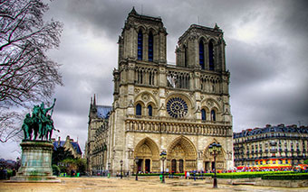
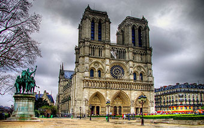
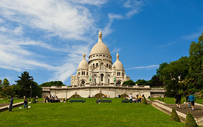
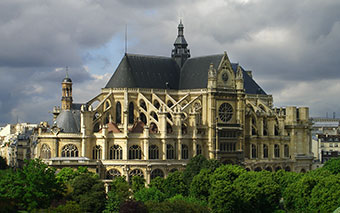
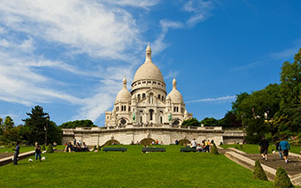
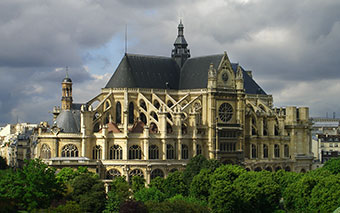

Париж
Париж — столиця Франції, адміністративний центр регіону Іль-де-Франс. Окремий департамент Франції. Розташований на річці Сена. Населення — 2 175 601 особа (на 01.01.2021), міська агломерація — 10 млн, у 2015 році населення міста становило 2 206 488 осіб, агломерації — 12 405 426. Штаб-квартири низки міжнародних організацій: ЮНЕСКО, Організація економічного співробітництва та розвитку, Міжнародна торгівельна палата та інші. Центр світової торгівлі (автомобілі, літаки, канцелярські товари й туристичне спорядження); головний національний промисловий округ (засоби транспорту, енергетичне обладнання, електроніка, одяг, косметика), фінансово-банківська столиця; великий транспортний вузол (2 міжнародні аеропорти).
Вищі навчальні заклади (13 університетів), Французький інститут, Французька академія. Славетні наукові інститути: Інститут Пастера, радіологічних досліджень. Культурний (97 музеїв, 300 мистецьких галерей, близько 100 театрів) і туристичний центр світової ваги.
За результатами опитування, яке провів журнал Forbes серед фахівців у 2010 році, Париж потрапив до дванадцятки найкрасивіших міст світу.
 

 



Цікаві місця в Парижі
Місця в Парижі, які варто відвідати: Лувр, Ейфелева вежа, Монмартр, Собор Паризької Богоматері, Сент-Шапель.